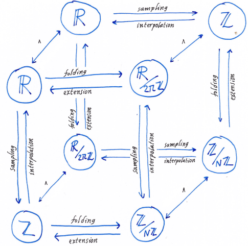

When I first learned about Fourier series and integrals, I hated it because it seemed like a collection of many ad-hoc definitions, formally related but very different.
To have a wider view of the subject, it helped me to realize that Fourier series and integrals are a particular case of not one, but many different constructions. Thus, they can be generalized in widely different directions, leading to differently flavored views of the original theory.
First you have the four classic cases that you may learn in school: Fourier series of periodic functions, Fourier transforms of integrable functions, the discrete-time Fourier transform and the discrete Fourier transform. These four classic cases are fundamental and you must learn their definition and properties by heart.
Then, you learn sampling theory and you see that some of the classic cases may be obtained from the others. For example, the discrete Fourier transform can be considered a particular case of Fourier series of a periodic function. These relationships can be neatly arranged in the so-called Fourier-Poisson cube.
Later, you learn distribution theory, that provides a common framework for signals and their samples using Dirac combs. Thus each of the four classic cases arises as a particular case of the Fourier transform of tempered distributions on the real line.
A very different generalization is given by Pontryagin duality. This begins by realizing that the domain of definition of each classic case has always the structure of a commutative group (\(\mathbf{R}\), \(\mathbf{Z}\), \(S^1\) or \(\mathbf{Z}/N\mathbf{Z}\)). Then, Pontryagin duality provides a general construction for Fourier analysis on commutative groups, and the four classic cases are particular cases of it.
By relaxing the condition of commutativity, you get non-commutative harmonic analysis. The case of a compact non-commutative group is described completely by the Paley-Wiener theorem, and the general non-compact non-commutative case is a large problem in representation theory, of which much is known; especially if the group has some additional structure (semisimple, solvable).
The next step is harmonic analysis on homogeneous spaces. It turns out that the group structure is not essential, and you can do almost everything just by having a group acting on your space, which need not be itself a group. For example, the sphere \(S^2\) is not a group, but there is the group of \(3D\) rotations acting over it, and this leads to spherical harmonics.
Finally there is spectral geometry, also called the spectral analysis of the Laplace-Beltrami operator. If your space is just a potato (a compact Riemannian manifold), there is no group whatsoever acting on it, but you still have a Laplace-Beltrami operator, it has a discrete spectrum, and you can do the analogue of Fourier series on it. A large part of the classic results of Fourier series extend to this case, except everything related to convolution—which is defined necessarily using the group structure.
Thus, what happens when you ask a mathematician, “what is Fourier analysis?” ?
If they are a real analyst, they will say that Fourier analysis are a set of examples in the study of tempered distributions.
If they are an algebraist, they will say that Fourier analysis is a very particular case of one-dimensional representation theory.
If they are a geometer, they will say that Fourier analysis is a particular case of spectral geometry for trivial flat manifolds.
Finally, if you ask a complex analyst, they will say that Fourier series are just Taylor series evaluated on the unit circle.
And all of them will be right.
The classic cases of Fourier analysis are used to express an arbitrary function \(f(x)\) as a linear combination of sinusoidal functions of the form \(x\to e^{i\xi x}\). There are four cases, depending on the space where \(x\) belongs.
Any periodic function \[f:S^1\to\mathbf{R}\] can be expressed as a numerable linear combination of sinusoidal waves. This is called the Fourier series of \(f\) \[f(\theta) = \sum_{n\in\mathbf{Z}} a_n e^{in\theta}\] and the coefficients \(a_n\) are computed as integrals of \(f\) \[a_n = \frac{1}{2\pi}\int_{S^1} f(\theta) e^{-in\theta} \mathrm{d}\theta\]
An arbitrary (integrable) function \[f:\mathbf{R}\to\mathbf{R}\] can be expressed as a linear combination of sinusoidal waves. The coefficients of this linear combination are called the Fourier integral of \(f\), also known as Fourier transform or characteristic function of \(f\), depending on the context. Thus, \(f\) is represented as \[f(x) = \int_\mathbf{R}a(\xi) e^{i\xi x} \mathrm{d} \xi\] This is exactly analogous to the Fourier series above, but now the coefficients \(a\) of the linear combination are indexed by a continuous index \(\xi\in\mathbf{R}\) instead of a discrete index \(n\in\mathbf{Z}\). The values of \(a(\xi)\) can be recovered by integrating again the function \(f\): \[a(\xi) = \frac{1}{2\pi}\int_\mathbf{R}f(x) e^{-i\xi x} \mathrm{d} x\] Notice that, even if their formulas look quite similar, the Fourier series is not a particular case of the Fourier transform. For example, a periodic function is never integrable over the real line unless it is identically zero. Thus, you cannot compute the Fourier transform of a periodic function.
In the finite case, you can express any vector \[(f_1, f_2, \ldots f_N)\] as a linear combination of "oscillating" vectors: \[f_k = \sum_l a_l e^{\frac{2\pi}{N}ikl}\] This is called the discrete Fourier transform. The coefficients \(a_l\) can be recovered by inverting the matrix \(M_{kl} = e^{\frac{2\pi}{N}ikl}\), which is unitary. Thus \[a_l = \frac{1}{N}\sum_k f_k e^{-\frac{2\pi}{N}ikl}\]
Finally, if you have a doubly-infinite sequence: \[\ldots,f_{-2},f_{-1},f_0,f_1,f_2,\ldots\] you can express it as a linear combination (integral) of sinusoidal functions sampled at the integers, which is quite a thing: \[f_n = \int_{S^1} a(\theta) e^{in\theta} \mathrm{d}\theta\] The coefficients \(a(\theta)\) of this infinite linear combination can be recovered as a linear combination of all the values of \(f\): \[a(\theta) = \frac{1}{2\pi}\sum_n f_n e^{-in\theta}\] Notice these two formulas are exactly the same as Fourier series, but reversing the roles of \(a\) and \(f\). This is an important symmetry.
Pontryagin duality extracts the essence of the definitions of Fourier series, Fourier integrals and discrete Fourier transforms. The main idea is that we have a spatial domain \(G\) and a frequency domain \(G^*\). Then, any function defined on the spatial domain \[f:G\to\mathbf{R}\] can be expressed as a linear combination of certain functions \(E\), indexed by the frequencies \[f(x) = \int_{G^*} a(\xi) E(x,\xi) \mathrm{d} \xi\] Here the coefficients \(a\) depend on the function \(f\) but the functions \(E\) depend only on the group \(G\); they are called the characters of \(G\). The coefficients \(a\) can be found by computing integrals over the spatial domain: \[a(\xi) = \int_G f(x) \overline{E(x,\xi)} \mathrm{d} \xi\] where the bar denotes complex conjugation. Notice that these formulas include Fourier series, Fourier integrals, the DFT and the DTFT as particular cases, according to the following table
| space | freq. | analysis | synthesis | |
|---|---|---|---|---|
| \(G\) | \(G^*\) | \(\displaystyle\widehat{f}(\xi)=\int_G f(x) \overline{E(\xi,x)}\mathrm{d}x\) | \(\displaystyle f(x)=\int_{G^*} \widehat{f}(\xi)E(\xi,x)\mathrm{d}\xi\) | |
| FS | \(S^1\) | \(\mathbf{Z}\) | \(\displaystyle f_n = \frac{1}{2\pi}\int_0^{2\pi} f(\theta)e^{-in\theta}\mathrm{d}\theta\) | \(\displaystyle f(\theta)=\sum_{n\in\mathbf{Z}} f_n e^{in\theta}\) |
| FT | \(\mathbf{R}\) | \(\mathbf{R}\) | \(\displaystyle\widehat{f}(\xi)=\frac{1}{\sqrt{2\pi}}\int_\mathbf{R}f(x)e^{-i\xi x}\mathrm{d}x\) | \(\displaystyle f(x)=\frac{1}{\sqrt{2\pi}}\int_{\mathbf{R}} \widehat{f}(\xi)e^{i\xi x}\mathrm{d}\xi\) |
| DFT | \(\mathbf{Z}_N\) | \(\mathbf{Z}_N\) | \(\displaystyle\widehat{f}_k=\frac{1}{N}\sum_{n=0}^{N-1}f_n\,e^{-2\pi ikn/N}\) | \(\displaystyle f_n=\sum_{k=0}^{N-1}\widehat{f}_k\,e^{2\pi ikn/N}\) |
| DTFT | \(\mathbf{Z}\) | \(S^1\) | \(\displaystyle \widehat{f}(\theta)=\sum_{n\in\mathbf{Z}} f_n e^{-in\theta}\) | \(\displaystyle f_n = \frac{1}{2\pi}\int_0^{2\pi}\widehat{f}(\theta)e^{in\theta}\mathrm{d}\theta\) |
A topological group is a group together with a topology compatible with the group operation. A morphism between two topological groups is a mapping which is at the same time continuous and a group morphism. Here we are interested in locally compact abelian groups (LCAG). We will denote the group operation by \(x+y\), and the inverse of a group element \(x\) by \(-x\).
The canonical example of LCAG is \(\mathbf{R}^n\) with the usual topology and the operation of sum of vectors. Another example of LCAG is the multiplicative group \(\mathbf{U}\) of complex numbers of norm 1, which topologically coincides with the unit circle \(S^1\). Other examples are any finite abelian group with the discrete topology; or \(\mathbf{Z}\), the additive group of integers with the discrete topology.
The group \(\mathbf{U}\) is very important in the following discussion. It can be denoted multiplicatively (by considering its elements as complex numbers), or additively (by considering its elements as angles). Both notations are used henceforth, and they are linked by the relation \[e^{i\alpha}e^{i\beta} = e^{i(\alpha+\beta)}\]
Let \(G\) be a LCAG. A character of \(G\) is a morphism from \(G\) to \(\mathbf{U}\). The set \(G'\) of all characters of \(G\) is a group (with the operation of pointwise sum of mappings) and also a topological space (with the topology of compact convergence). It turns out that this group is locally compact, thus it is a LCAG. It is called the dual group of \(G\). There is a canonical morphism between \(G\) and its bidual, and it can be seen easily that this morphism is injective. The Pontryagin duality theorem states that \(G\) is isomorphic to its bidual. Another result states that \(G\) is compact if an only if its dual is discrete.
For example, the dual group of \(\mathbf{R}^n\) is itself. The integers \(\mathbf{Z}\) and the unit circle \(\mathbf{U}\) are dual to each other. The dual of any finite group is isomorphic (though non-canonically) to itself.
The action of a character \(\xi\in G'\) over a group element \(x\in G\) is denoted by \(E(\xi,x)\) or even \(e^{i\xi x}\). In the latter case, the complex conjugate of \(e^{i\xi x}\) is denoted by \(e^{-i\xi x}\). The exponential notation is justified by the following properties, arising from the definitions
\(E(\xi,x)\) is a unit complex number, thus it has the form \(e^{i\theta}\) for some real number \(\theta\)
\(E(\xi,x+y) = E(\xi,x)E(\xi,y)\), by the definition of character
\(E(\xi + \eta,x) = E(\xi,x)E(\eta,x)\), by the definition of dual group
Let \(G\) be a LCAG. A non-vanishing measure over \(G\) which is invariant by translations is called a Haar measure. Haar’s theorem states that there is a single Haar measure modulo multiplication by positive constants. Another result states that \(G\) is compact if and only if its total Haar measure (any one of them) is finite.
For example, Lebesgue measure on \(\mathbf{R}^n\) is a Haar measure. The counting measure of a discrete group is a Haar measure.
Given \(G\), we fix a single Haar measure and we can talk about the spaces \(L^p(G)\). The elements of this space are complex-valued functions such that the \(p\)th power of their norm has finite integral with respect to Haar’s measure. Notice that the set \(L^p(G)\) does not depend on the actual choice of normalization factor selected for the definition of the Haar measure.
Now we can define a general notion of Fourier transforms, for functions belonging to the space \(L^1(G)\). The Fourier transform of a function \[f:G\to\mathbf{C}\] is a function \[\hat f:G'\to\mathbf{C}\] defined by \[\hat f(\xi) = \int_G f(x) e^{-i\xi x}\mathrm{d} x\] Here \(e^{-i\xi x}\) denotes the conjugate of the complex number \(e^{i\xi x}=E(\xi,x)\). The inverse transform of a function defined on \(G'\) is defined similarly, but without the conjugate: \[\check f(x) = \int_{G'} f(\xi) e^{i\xi x}\mathrm{d} \xi\]
Note that these definitions require selecting Haar measures on \(G\) and \(G'\) (this amounts to fixing two arbitrary constants).
So far we have just given definitions: LCAG, characters, dual group, Haar measure, and Fourier transform. Now it is time to recover the main results of harmonic analysis.
The first result is the Fourier inversion theorem for \(L^1(G)\), which states that the inverse transform is actually the inverse, for an appropriate choice of scaling of the Haar measures on \(G\) and \(G'\). Such a pair of measures are called harmonized, or dual to each other. In the following, when we state a result involving integrals on \(G\) and \(G'\) we will always assume that the Haar measures are harmonized.
The second result is the energy conservation theorem for \(L^2(G)\), which states that, when \(f\) and \(\hat f\) are square-integrable, we have \[\|f\|_{L^2(G)} = \|\hat f\|_{L^2(G')}\] Particular cases of this theorem are the formulas of Parseval, Plancherel, etc. The energy conservation theorem is needed to extend by continuity the definition of Fourier transforms to \(L^2(G)\)
The third result is the convolution theorem. First notice that the group structure allows to define the convolution of any two functions on \(L^1(G)\): \[[f*g](x) = \int_G f(y)g(x-y)\mathrm{d} y\] Now, the convolution theorem says that the Fourier transform takes convolution to point-wise multiplication \[\widehat{f*g} = \hat f \hat g\]
There is a long list of results, that can be found elsewhere. Let us mention a last one. The dual group \(G'\) is itself a LCAG, so it has a Fourier transform in its own right. This mapping is the \(L^2\) adjoint of the inverse Fourier transform defined from \(G\).
Finally, notice that in the case of finite groups all these results are trivial and they amount to elementary linear algebra. In the continuous case they are not trivial, mainly because we don’t have an identity element for the convolution (e.g., the dirac delta function), and to prove the results one has to resort to successive approximations of the identity.
The sequence of proofs typically starts by the convolution theorem, which is used to prove the conservation of energy for functions that belong to \(L^1\cap L^2\), then to extend by density the definition of the Fourier transform to \(L^2\) and finally to prove the inversion theorem. Except the definition of the Haar measure and the approximation of the identity, which are particular construction, the rest of the proofs are identical to the corresponding proofs for the case of Fourier transforms on the real line. You just have to check that all the steps on the proof make sense in a group.
Pontryagin duality gives an unified treatment of the four classic cases in Fourier analysis: you are always doing exactly the same thing, but in different groups. However, it does not say anything about the direct relationship between them. For example, a Fourier series where all but a finite number of the coefficients is zero can be represented as a vector of length \(N\). Does it have any relationship with the discrete Fourier transform on \(\mathbf{Z}_N\)? The answer is yes, and it is the main result of sampling theory.
Let us start with precisely this case. Suppose that we have a periodic function \(f(\theta)\) whose Fourier series is finite (this is called a trigonometric polynomial). For example, \[f(\theta)=\sum_{n=0}^{N-1} f_ne ^{in\theta}\] Now, we can do three different things with this object. One, we can express the coefficients \(f_n\) as integrals of \(f\): \[f_n = \frac{1}{2\pi}\int_0^{2\pi} f(\theta)e^{-in\theta}\mathrm{d}\theta\] Two, we can consider the vector of coefficients \((f_0,\ldots,f_{N-1})\) and compute its inverse DFT \[\check{f}_k = \sum_{n=0}^{N-1} f_n\,e^{2\pi i nk/N}\] and three, just for fun, we can evaluate the function \(f\) at \(N\) points evenly spaced along its period \[f\left(\frac{2\pi\cdot 0}{N}\right), f\left(\frac{2\pi\cdot 1}{N}\right), f\left(\frac{2\pi\cdot 2}{N}\right), \ldots f\left(\frac{2\pi(N-1)}{N}\right)\]
These three operations are, a-priori, unrelated. At least, Pontryagin duality does not say anything about them, you are working with different groups \(S^1\) and \(\mathbf{Z}_N\) that have nothing to do with each other.
However, a number of very funny coincidences can be observed:
The \(k\)-th sample \(f\left(\frac{2\pi k}{N}\right)\) equals \[\sum_{n=0}^{N-1}f_n\,e^{2\pi ikn/N}\] which is exactly \(\check{f}_k\)
Thus, the vector of samples of the polynomial \(f\) is the IDFT of the vector of coefficients
Correspondingly, the vector of \(N\) coefficients of the polynomial \(f\) is the DFT of the vector of \(N\) uniform samples of \(f\) between \(0\) and \(2\pi\).
In other words, the complete Fourier series of \(f\) can be obtained by evaluating the function \(f\) at \(N\) points.
If you approximate the integral that evaluates \(f_n\) from \(f\) as a sum of \(N\) step functions obtained by sampling \(f\), the computation is exact.
All these results lie at the core of sampling theory. They provide a beautiful, analog interpretation of the definition of the discrete Fourier transform. In fact, regardless of the definition using group characters, we could have defined the discrete fourier transform using these results! (property 3 above).
The sampling theorem takes many different forms, but it always amounts to a conservation of information, or conservation of degrees of freedom. Thus, the properties above can be rephrased as
Evaluating a trigonometric polynomial of \(N\) coefficients at \(N\) points is a linear map \(\mathbf{C}^N\to\mathbf{C}^N\)
This linear map is invertible if and only if the points are different (thus, the function can be exactly recovered from \(N\) of its samples)
If the points are uniformly distributed, this linear map is the discrete Fourier transform
The second statement is often called the sampling theorem. The condition that to recover a polynomial of \(N\) coefficients requires \(N\) samples is called the Nyquist condition. Since it is natural to consider trigonometric polynomials of the form \[P(\theta)=\sum_{n=-N/2}^{N/2} p_n\,e^{in\theta}\] the Nyquist condition is often stated as the sampling rate must be at least the double of the maximal frequency.
We have thus related Fourier series with the \(N\)-dimensional DFT, via the operation of sampling at \(N\) point. The reasoning is finite and mostly trivial. There are a lot more correspondences between the four classic cases. For example, Shannon-Whittaker interpolation relates the Fourier transform with the discrete-time Fourier transform: if the support of \(\hat f\) lies inside the interval \([-\pi,\pi]\), then \(f\) can be recovered exactly by the values \(f(\mathbf{Z})\). A different construction relates Fourier transforms and Fourier series: if we have a rapidly decreasing function \(f(x)\), we can build a \(2\pi\)-periodic function by folding it: \[\tilde f(\theta)=\sum_{n\in\mathbf{Z}} f(\theta+2\pi n)\] and the Fourier series of \(\tilde f\) and the Fourier transform of \(f\) are closely related.
All these relationships between the four classic cases are neatly encoded in the Fourier-Poisson cube, which is an awesome commutative diagram:

Notice that most of sampling theory can be done without recourse to distributions. Indeed, Shannon, Nyquist, Whittaker, Borel, all stated and proved their results way before the invention of distributions. Nowadays, distribution theory provides a satisfying framework to state all the classic sampling results in a unified form. It is difficult to judge which method is simpler, because the classic sampling results all have elementary proofs, while the detailed definition of tempered distributions is a bit involved. It is better to be familiar with both possibilities.
In classical sampling theory, you sample a continuous function \(f:\mathbf{R}\to\mathbf{C}\) by evaluating it at a discrete set of points, for example \(\mathbf{Z}\), thus obtaining a sequence of values \(\ldots,f(-2),f(-1),f(0),f(1),f(2),\ldots\), which can be interpreted as a function \(\tilde f:\mathbf{Z}\to\mathbf{C}\). Thus, the sampling operation is a mapping between very different spaces: from the continuous functions defined over \(\mathbf{R}\) into the functions defined over \(\mathbf{Z}\).
When you perform sampling using distributions, you sample a smooth function \(f\) by multiplying it by a Dirac comb. Thus, the sampling operation is linear a mapping between subspaces of the same space: tempered distributions.
Distributions are an extension of functions just like the real numbers \(R\) are an extension of the rationals \(Q\). Most of the operations that can be done with \(Q\) can be done with \(R\), and then some more. Still, there is a price to pay: there are some operations that only make sense on the smaller set. For example, while the “denominator” function on \(\mathbf{Q}\) cannot be extended meaningfully to \(\mathbf{R}\), the elements of \(\mathbf{R}\) can not be enumerated like those of \(\mathbf{Q}\), etc. However, if you want to work with limits, the space \(\mathbf{Q}\) is mostly useless and you need \(\mathbf{R}\).
There are a few spaces of distributions. The three most famous are
\(\mathcal{D}'\) the space of all distributions
\(\mathcal{S}'\) the space of tempered distributions
\(\mathcal{E}'\) the space of compactly supported distributions
Each of these spaces is a huge generalization of an already very large space of functions:
\(\mathcal{D}'\) contains all functions of \(L^1_{loc}\)
\(\mathcal{S}'\) contains all functions of \(L^1_{loc}\) that are slowly growing (bounded, or going to infinity at a polynomial rate)
\(\mathcal{E}'\) contains all compactly supported integrable functions
Here \(L^1_{loc}\) denotes the set of locally integrable functions, that is, complex-valued functions such that \(\int_K|f| <+\infty\) for any compact \(K\).
These are the properties that we earn with respect to the original spaces:
Most operations on functions extend naturally to distributions: sums, product by scalars, product by a function, affine changes of variable
Any distribution is infinitely derivable, and the derivative belongs to the same space
Any distribution is locally integrable
The Fourier transform is an isometry in the space of tempered distributions
There is a very easy to use definition of limit of distributions
And these are the prices to pay for the daring:
You cannot evaluate a distribution at a point
You cannot multiply two distributions
There is no way to define a norm in the vector space of distributions
There are several, rather different, definitions of distribution. The most practical definition today seems to be as the topological duals of spaces of test functions:
\(\mathcal{D}\) the space of all \(\mathcal{C}^\infty\) functions of compact support
\(\mathcal{S}\) the space of all rapidly decreasing \(\mathcal{C}^\infty\) functions
\(\mathcal{E}\) the space of all \(\mathcal{C}^\infty\) functions
Notice that \(\mathcal{D}\) and \(\mathcal{E}\) make sense for functions defined over an arbitrary open set, but \(\mathcal{S}\) only makes sense on the whole real line.
The only problem with this is that the topologies on these spaces of test functions are not trivial to construct. For example, there is no natural way to define useful norms on these spaces. Thus, topologies need to be constructed using families of seminorms, or by other means (in the case of \(\mathcal{D}\)). This is out of the scope of this document, but it’s a standard construction that can be easily found elsewhere (e.g., Gasqued-Witomski).
The crucial topological property that we need is the definition of limit of a sequence of distributions. We say that that a sequence \(T_n\) of distributions converges to a distribution \(T\) when \[T_n(\varphi)\to T(\varphi)\qquad\textrm{for any test function }\ \varphi\] Thus, the limit of distributions is reduced to the limit of scalars. A sequences of distributions is convergent if and only if it is “pointwise” convergent. This is much more simple than the case of functions, where there are several different and incompatible notions of convergence.
A distribution is, by definition, a linear map on the space of test functions. The following notations are common for the result of applying a distribution \(T\) to a test function \(\varphi\): \[T(\varphi) \quad=\quad \left<T,\varphi\right> \quad=\quad \int T\varphi \quad=\quad \int T(x)\varphi(x)\mathrm{d}x\] The last notation is particularly insidious, because for a generic distribution, \(T(x)\) does not make sense. However, it is an abuse of notation due to the following lemma:
Lemma. Let \(f\) be a locally integrable function (slowly growing, or compactly supported). Then the linear map \[T_f : \varphi\mapsto\int f(x)\varphi(x)\mathrm{d}x\] is well-defined and continuous on \(\mathcal{D}\) (or \(\mathcal{S}\), or \(\mathcal{E}\)). Thus it is a distribution.
The lemma says that any function can be interpreted as a distribution. This is very important, because all the subsequent definitions on the space of distributions are crafted so that, when applied to a function they have the expected effect.
For example, the derivative of a distribution \(T\) is defined by \[\left<T',\varphi\right> := \left<T,-\varphi'\right>\] Two observations: (1) this definition makes sense, because \(\varphi\) is always a \(\mathcal{C}^\infty\) function, and so is \(-\varphi'\). And (2) this definition extends the notion of derivative when \(T\) corresponds to a derivable function \(f\). We write \[T_{f'}= {T_f}'\] to indicate that the proposed definition is compatible with the corresponding construction for functions.
A similar trick is used to extend the shift \(\tau_a\), scale \(\zeta_a\) and symmetry \(\sigma\) of functions (where \(a>0\)): \[\begin{aligned} \tau_a f(x) &:= f(x-a) \\ \zeta_a f(x) &:= f(x/a) \\ \sigma f(x) &:= f(-x) \\\end{aligned}\] to the case of distributions: \[\begin{aligned} \left<\tau_a T,\varphi\right> &:= \left<T,\tau_{-a}\varphi\right> \\ \left<\zeta_a T,\varphi\right> &:= \left<T,a^{-1}\zeta_{a^{-1}}\varphi\right> \\ \left<\sigma T,\varphi\right> &:= \left<T,\sigma\varphi\right> \\\end{aligned}\] and the compatibility can be checked by straightforward change of variable.
After regular functions, the most important example of distribution is the Dirac delta, defined by \(\delta(\varphi):=\varphi(0)\). In the habitual notation we write \[\int\delta(x)\varphi(x)\mathrm{d}x = \varphi(0)\] because this form is very amenable to changes of variable. An equivalent definition is \(\delta(x)=H'(x)\) where \(H\) is the indicator function of positive numbers. This makes sense because \(H\) is locally integrable, and its derivative is well-defined in the sense of distributions. The Dirac delta belongs to all three spaces \(\mathcal{D}'\), \(\mathcal{S}'\) and \(\mathcal{E}'\).
Using Diracs, we can define many other distributions, by applying shifts, derivatives, and vector space operations. For example, the Dirac comb is defined as \[\Xi(x)=\sum_{n\in\mathbf{Z}}\delta(x-n)\] where the infinite series is to be interpreted as a limit. This is well-defined in \(\mathcal{D}'\) (where the sum is finite due to the compact support of the test function) and \(\mathcal{S}'\) (where the series is trivially convergent due the rapid decrease of the test function) but not on \(\mathcal{E}'\) (where the series is not necessarily convergent for arbitrary test functions, for example \(\varphi=1\in\mathcal{E}\)).
We can do other crazy things, like \(\sum_{n\ge 0}\delta^{(n)}(x-n)\), which is also well defined when applied to a test function. But we cannot do everything. For example \(\sum_{n\ge 0}\delta^{(n)}(x)\) is not well defined, because there is not a guarantee that the sum of all derivatives of a test function at the same point converges.
How to define the Fourier transform of a distribution? We need to find a definition that extends the definition that we already have for functions, thus \(\widehat{T_f}=T_{\widehat{f}}\). It is easy to check that the definition \[\left<\widehat{T},\varphi\right> := \left<T,\widehat{\varphi}\right>\] does the trick, because it corresponds to Plancherel Theorem when \(T\) is a locally integrable function.
However, notice that this definition does not make sense in \(\mathcal{D}'\): if \(\varphi\in\mathcal{D}\), then it has compact support, so its Fourier transform does not, thus \(\widehat{\varphi}\not\in\mathcal{D}\).
The space \(\mathcal{S}\), called the Schwartz space, has the beautiful property of being invariant by Fourier transforms. Indeed, the Fourier transform, with appropriate normalization constants, is an \(L^2\) isometry on \(\mathcal{S}\). Thus, tempered distributions are the natural space where to perform Fourier transforms.
Now, we can compute the Fourier transform, in the sense of distributions, of many functions! For example, what is the Fourier transform of the function \(f(x)=1\)? This function is a temperate distribution, so it must have a Fourier transform, doesn’t it? Indeed it does, and it can be easily found from the definitions: \[\left<\widehat{1},\varphi\right> = \left<1,\widehat{\varphi}\right> = \int\widehat{\varphi}(x)\mathrm{d}x = \frac{1}{\sqrt{2\pi}}\varphi(0)\] So, the Fourier transform of a constant is a Dirac!
By combining this result with the derivatives we can compute the Fourier transform of polynomials. For example \(f(x)=x^2\) has the property that \(f''\) is constant, thus \(\widehat{f''}\) is a Dirac, and then \(\widehat{f}\) is the second derivative of a Dirac.
Can we compute the Fourier transform of \(f(x)=e^x\) ? No, because it is not a slowly growing function, and it does not correspond to any tempered distribution.
However, the function \(f(x)=e^{ix}\) is actually slowly growing (it is bounded), so it has a Fourier transform as a tempered Distribution that is \(\widehat{f}(\xi)=\delta(\xi-1)\). Using trigonometric identities, we find the Fourier transforms of \(\sin\) and \(\cos\), which are also sums of Diracs:
\[\begin{aligned} \widehat{\cos}(\xi) &=\frac{\delta(x-1)+\delta(x+1)}{2} \\ \widehat{\sin}(\xi) &=\frac{\delta(x-1)-\delta(x+1)}{2i} \\\end{aligned}\]
And, as we would say in Catalan, the mother of the eggs1: the Fourier transform of a Dirac comb is another Dirac comb. I don not know how to prove this by combining the identities above, but it has a simple proof by expressing the Dirac comb as the derivative of a sawtooth function and applying it to a test function. \[\textrm{(typeset the computation)}\]
Spectral theory provides a brutal generalization of a large part of Fourier analysis. We do away with the group structure (and thus with the possibility to have convolutions, which are based on the action of the group). In exchange, we need to work inside a compact space, endowed by a Riemannian metric. For example, a compact sub-manifold of Euclidean space. The canonical example is \(S^1\), that in the classical case leads to Fourier series. Here, we recover all the results of Fourier series (except those related to periodic convolution) for functions defined on our manifold.
Let \(M\) be a compact Riemannian manifold (with or without boundary), and let \(\Delta\) be its Laplace-Beltrami operator, defined as \(\Delta=*d*d\), where \(d\) is the exterior derivative (which is independent of the metric) and \(*\) is the Hodge duality between \(p\)-forms and \(d-p\)-forms (which is defined using the metric).
The following are standard results in differential geometry (see e.g. Warner’s book chapter 6 https://link.springer.com/content/pdf/10.1007%2F978-1-4757-1799-0_6.pdf)
There is a sequence of \(\mathcal{C}^\infty(M)\) functions \(\varphi_n\) and positive numbers \(\lambda_n\to\infty\) such that \[\Delta\varphi_n=-\lambda_n\varphi_n\]
The functions \(\varphi_n\), suitably normalized, are an orthonormal basis of \(L^2(M)\).
These results generalize Fourier series to an arbitrary smooth manifold \(M\). Any square-integrable function \(f:M\to\mathbf{R}\) is written uniquely as \[f(x)=\sum_nf_n\varphi_n(x)\] and the coefficients \(f_n\) are computed by \[f_n=\int_Mf\varphi_n.\] Some particular cases are the habitual Fourier and sine bases (but not the cosine basis), bessel functions for the disk, and spherical harmonics for the surface of a sphere.
| \(M\) | \(\varphi_n\) | \(-\lambda_n\) | |
|---|---|---|---|
| interval | \([0,2\pi]\) | \(\sin\left(\frac{nx}{2}\right)\) | \(n^2/4\) |
| circle | \(S^1\) | \(\sin(n\theta),\cos(n\theta)\) | \(n^2\) |
| square | \([0,2\pi]^2\) | \(\sin\left(\frac{nx}{2}\right)\sin\left(\frac{m\theta}{2}\right)\) | \(\frac{n^2+m^2}{4}\) |
| torus | \((S^1)^2\) | \(\sin(nx)\sin(my),\ldots\) | \(n^2+m^2\) |
| disk | \(|r|\le1\) | \(\sin,\cos(n\theta)J_n(\rho_{m,n}r)\) | \(\rho_{m,n}\) roots of \(J_n\) |
| sphere | \(S^2\) | \(Y^m_l(\theta,\varphi)\) | \(l^2+l\) |
The eigenfunctions \(\varphi_n\) are called the vibration modes of \(M\), and the eigenvalues \(\lambda_n\) are called the (squared) fundamental frequencies of \(M\).
Several geometric properties of \(M\) can be interpreted in terms of the Laplace-Beltrami spectrum. For example, if \(M\) has \(k\) connected components, the first \(k\) eigenfuntions will be supported successively on each connected component. On a connected manifold \(M\), the first vibration mode can be taken to be positive \(\varphi_1\ge0\), thus all the other modes have non-constant signs (because they are orthogonal to \(\varphi_1\)). In particular, the sign of \(\varphi_2\) cuts \(M\) in two parts in an optimal way, it is the Cheeger cut of \(M\), maximizing the perimeter/area ratio of the cut.
The zeros of \(\varphi_n\) are called the nodal curves (or nodal sets) of \(M\), or also the Chladni patterns. If \(M\) is a subdomain of the plane, these patterns can be found by cutting an object in the shape of \(M\), pouring a layer of sand over it, and letting it vibrate by high-volume sound waves at different frequencies. For most frequencies, the sand will not form any particular pattern, but when the frequency coincides with a \(\sqrt{\lambda_n}\), the sand will accumulate over the set \([\varphi_n=0]\), which is the set of points of the surface that do not move when the surface vibrates at this frequency. In the typical case, the number of connected components of \([\varphi_n>0]\) grows linearly with \(n\), thus the functions \(\varphi_n\) become more oscillating (less regular) as \(n\) grows.
Generally, symmetries of \(M\) arise as multiplicities of eigenvalues. The Laplace-Beltrami spectrum \({\lambda_1,\lambda_2,\lambda_3,\ldots}\) is closely related, but not identical, to the geodesic length spectrum, that measures the sequence of lengths of all closed geodesics of \(M\). The grand old man of this theory is Yves Colin de Verdière, student of Marcel Berger.
Geometry is not in general a spectral invariant, but non-isometric manifolds
with the same spectrum are difficult to come by. The first pair of distinct
but isospectral manifolds was wound in 1964 by John Milnor, in dimension 16.
The first example in dimension 2 was found in 1992 by Gordon, Webb and
Wolperd, and it answered negatively the famous question of Marc Kac “Can you
hear the shape of a drum?’.
In 2018, we have many ways to construct discrete and continuous families of
isospectral manifolds in dimensions two and above.
“La mare dels ous”, or in french “où il gît le
lièvre”. I do not know a similarly colorful expression in english↩